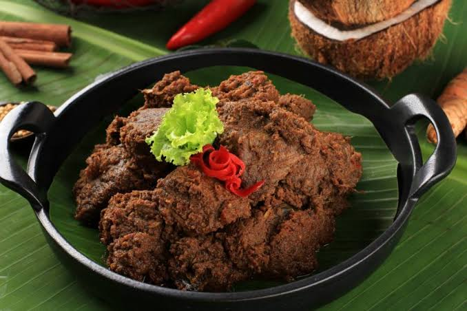
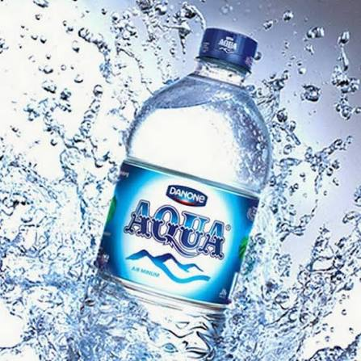
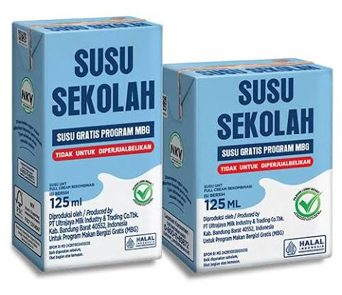
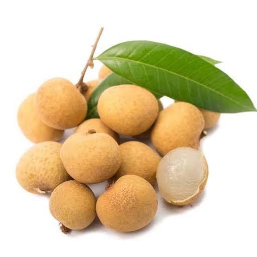
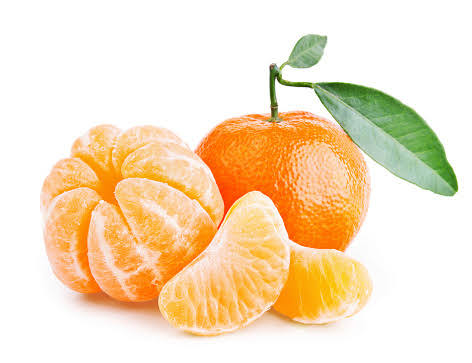
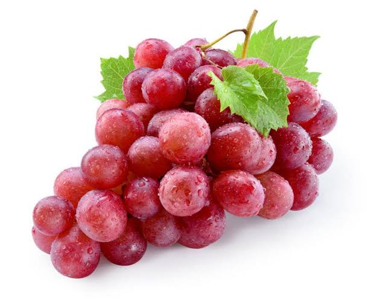
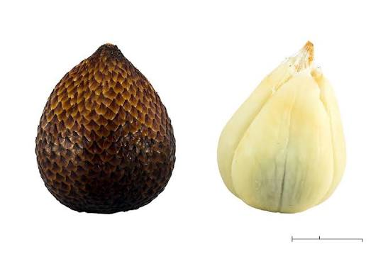

Makanan
Makanan
Nasi Goreng Spesial PPLG
Nasi goreng sehat dengan minyak rendah jenuh, suwiran ayam, telur mata sapi, dan tambahan acar timun serta tomat segar.
Rp 12.000 (Bisa Subsidi Gratis)
Pesan via WA
MakananRendang Daging Sapi
Daging sapi empuk pilihan yang dimasak perlahan dengan santan kelapa dan bumbu rempah tradisional kaya rasa.
Rp 17.000 (Bisa Subsidi Gratis)
Pesan via WA Favorit
Favorit
Samyang Roll
Mi pedas ala Korea berbalut gulungan telur lembut, nori gurih, dan taburan biji wijen yang menggugah selera.
Rp 8.000
Pesan via WA Makanan
Makanan
Nasi Kuning Spesial
Nasi kuning harum rempah gurih, disajikan dengan irisan telur dadar, tempe orek, perkedel, dan timun segar.
Rp 14.000 (Bisa Subsidi Gratis)
Pesan via WA
MinumanAir Mineral Aqua (600ml)
Air mineral pegunungan pilihan yang menyegarkan, murni, dan higienis untuk mengembalikan cairan tubuh.
Rp 3.000
Pesan via WA
MinumanSusu Sapi Murni (250ml)
Susu segar pasteurisasi tinggi kalsium untuk kekuatan tulang dan gigi, tersedia pilihan rasa original atau cokelat.
Rp 3.500
Pesan via WA
BUAH SEGARBuah Lengkeng Segar Pilihan
Lengkeng segar petik kebun dengan daging buah tebal, manis alami, dan biji kecil. Kemasan 1kg.
Rp 20.000 / kg
Pesan via WA
BUAH SEGARBuah Jeruk Manis Segar
Jeruk pilihan kaya vitamin C, rasa manis segar dan banyak mengandung air. Kemasan 1kg.
Rp 15.000 / kg
Pesan via WA
BUAH SEGARBuah Anggur Merah Pilihan
Anggur segar berkualitas tinggi, tekstur renyah, manis, dan segar di setiap gigitan. Kemasan 500g.
Rp 26.000 / 500g
Pesan via WA
BUAH SEGARBuah Salak Pondoh Asli
Salak pondoh lokal manis kesukaan keluarga, daging buah tebal dan tidak sepat. Kemasan 1kg.
Rp 22.000 / kg
Pesan via WA